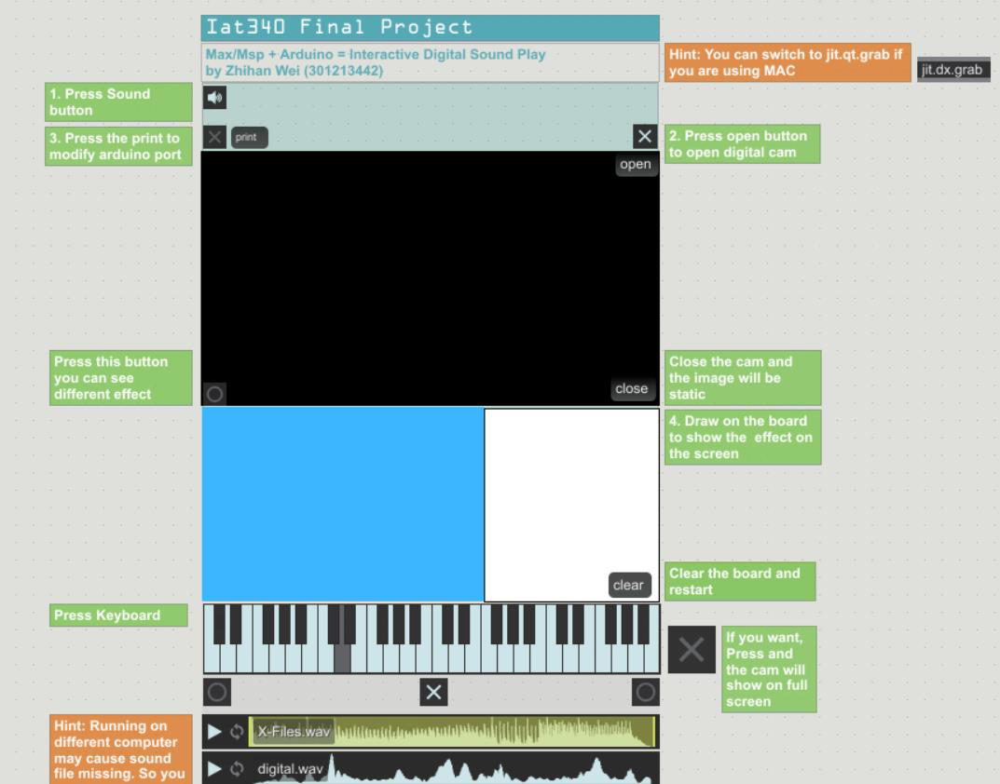

Project1

In this Project I designed 3 interaction forms to get interact in Max at the sametime. Firstly, I use the Arduino UNO to communicate with the Max. I use Arduino Water Level Sensor to trigger a sound according to the sensor get into to the water. By chatting with the Max. If the sensor touch the water, the sound will be play in the speaker. In Max, when the value less than the value 200, it will activate the switch but the audio playback mad. It continues to arrive from an active toogle signal. It activates the togedge. If the value exceed 200, the sounding will get block. Moreover, i overcome the problem in the Max to makesure user can use mouse or touch to draw the blank board to get interaction with the real-time cam on the computer. Different waveform sounds frequency will be activate and playing when user drawing on the board. Meanwhile, the object that the cam captured will distortion. If user press the “close”button on the interface, the image that camera captured will be static.Lastly, user also can click or touch the piano or just press the "button" shown on the interface to get more interactive sound playing effect. If user interact with the interface at the same time, it can create an interesting diegetic sound playing.
I really enjoy doing these project, it is so attractive. I have learned a lot about how to make interactive sound installation by using Max communicate with other devices.
Project2

Humanity In-Dependence consists of a single screen projection of an image that
can change based off of audience interaction. The audience can interact with the
artwork by shining a flashlight at the light sensor located inside the grey box
container. Upon detecting the flashlight, the screen will switch back and forth between
that of a human face and a robotic face. The challenge I met was the projected image was initially a static image. I should make the image to be more dynamic prior to the prompt of the flashlight so that the artwork is less static when seen from a distance. To solve the problem, I re-programmed in the processing of the image. so that it would fade back and forth between the two images via a timer.The audience can continue manipulate the image for as long as they have the flashlight aimed at the light sensor or until they decide to leave. The project requires a person to input a light source in reality which will manipulate the digital space through a computer. I found that the primary visual feedback given by digital image manipulation requires both human and machine working together for a successful interaction to take place.